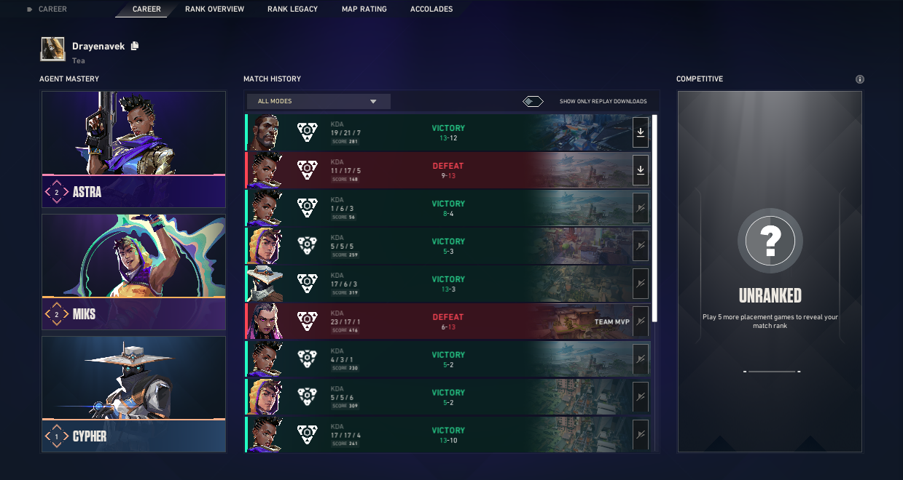
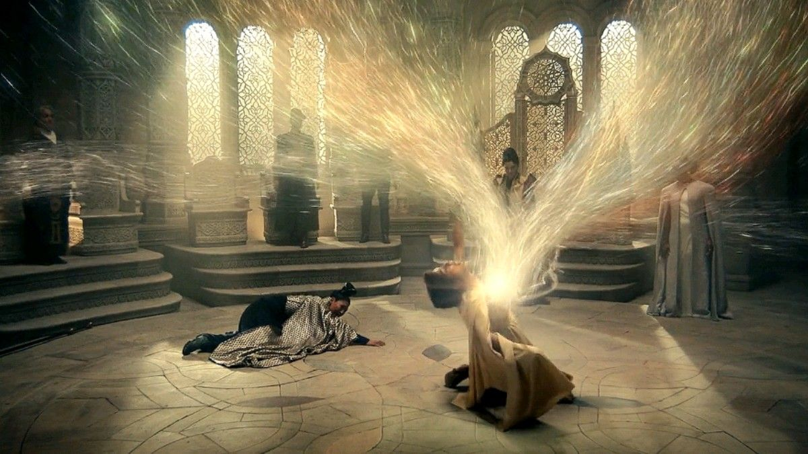

THE SOUNDTRACK
Music has always been more than just something playing in the background. It's an escape, a source of comfort, and sometimes the perfect companion to whatever the day brings. From songs that linger long after they've ended to artists whose work becomes part of my everyday routine, this is a collection of the sounds that stay with me. Whether it's something to get lost in, something to relate to, or simply something to have on repeat, every track has its own place in the soundtrack. Some songs bring back memories, others put feelings into words I couldn't quite find myself. Regardless of the reason, there's always something worth coming back to, one song at a time.
THE DISTRACTION
Some days call for a different kind of escape, and that's where games come in. Whether it's exploring unfamiliar worlds, getting caught up in competitive matches, or simply spending time playing with friends, gaming has become one of my favorite ways to unwind. I'm not particularly concerned with being the best or climbing every leaderboard. It's more about the experience, the occasional chaos, the unexpected moments, and the memories made along the way. From frustrating losses to victories that feel far more rewarding than they should, every match has a story of its own. At the end of the day, it's less about the rank and more about having a good time.


THE ESCAPE
There's something fascinating about being immersed in a story that exists entirely outside your own reality. Movies and television offer a chance to experience different perspectives, explore unfamiliar worlds, and follow characters through lives far removed from my own. I'm drawn to stories with compelling narratives, imaginative settings, and worlds that make you wish you could stay a little longer. Sometimes, all it takes is a good film or a few episodes of a series to forget about everything else for a while.